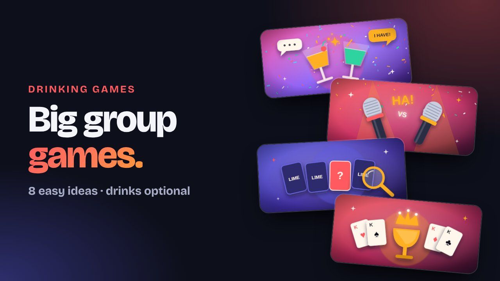

TipsyPlay Blog
Drinking Games for Big Groups: 8 That Keep Everyone Playing
The problem with big groups isn't the games. It's the waiting. With ten people, a game where one person plays at a time means nine people drifting off. These eight keep everyone in the round.

On this page
What makes a game work for a big group
Look for three things when the guest list passes eight:
- Everyone acts at once. Voting, guessing or answering together beats waiting in a circle.
- Short rounds. A round should finish in a minute or two, so late arrivals can join at the next one.
- Watching is fun too. Some guests want to spectate. The best big-group games are entertaining to watch.
House rules for every game below: a drink means one small, optional sip, every turn has a no-drink answer, passing is always fine, and nothing stacks from one round to the next.
1. Never Have I Ever (2–12 players)
The easiest big-group game, because everyone answers every round. In TipsyPlay's Never Have I Ever, each phone shows the same line and everyone taps I HAVE or NEVER at once. A room of 12 takes the same time per round as a room of 4.
Drink or alternative: one small sip or a 3-second pose. Most likely mode turns each round into a vote for a friend, which big groups love.
2. Punchline Duel (3–12 players)
Two players write answers to the same funny prompt, and everyone else votes. With a big group, most people are voting most of the time, so nobody sits idle. Punchline Duel rotates who writes.
Drink or alternative: the losing writer takes a small sip or passes.
3. Odd Word Out (4–10 players)
Everyone gets the same secret word except one player, the mole, who only sees the category. Each person gives a one-word clue out loud, then the room votes for the bluffer. Odd Word Out deals a private card to every phone, so nobody can peek.
Drink or alternative: drinks are optional, and a no-drink setting is one tap away.
4. Category Countdown: Hot Potato (3–10 players)
In Hot Potato mode, the category passes around the room one answer each until only one player is left. Rounds are fast and loud. Put the board on a TV and the whole room can follow along. How to play Category Countdown.
Drink or alternative: one small sip or the on-screen alternative. Points only turns drinking off for everyone.
5. King's Cup on phones (2–10 players)
The classic, without a soggy deck in the middle of the table. In TipsyPlay's King's Cup each player draws on their own phone, and every card shows a clearly named rule.
Drink or alternative: one small optional drink, the named alternative, or neither. Nothing stacks from one card to the next, and the cup on screen only counts kings. Nobody drinks it.
6. Cheers to the Governor (table game, any size)
You need: nothing.
- Count from 1 to 21 around the room, one number each.
- Whoever says 21 calls "cheers to the governor" and gets to change one number. For example, 7 becomes "banana", or the count reverses at 12.
- Start again at 1. A mistake restarts the count from the next person.
Drink or alternative: a mistake is one small sip or a tally. After three or four new rules, start a fresh game rather than adding more.
7. Team Charades with points (any size)
You need: slips of paper and a timer.
Split into two teams. Each round, one player acts out a word for their team for one minute. The team scores a point per correct guess. This is a ready-made no-drink game. If the room wants drinks, the losing team of each round can take one small optional sip together, and nobody is ever singled out.
Prefer drawing to acting? Sketchy Guess takes 4 to 12 players and scores points only.
8. Split Decision (2–10 players)
A would-you-rather game with a twist. Everyone locks A or B on their phone, then guesses how many friends picked A. Split Decision keeps score in points, so it's a natural break between drinking games.
Drink or alternative: points are the whole game. A small drink after a reveal is optional, never required.
More than 12 people? Split the room
Most phone games top out at 10 to 12 players. With a bigger crowd, run two rooms. Two hosts each start a game, and guests pick a table. Swap halfway through the night so everyone meets.
A TV helps a lot. Category Countdown and Hot Take Court can show their board on a TV or laptop, so people standing at the edges can follow along.
Quick FAQ
What is the best drinking game for a big group?
Games where everyone answers at once work best. Never Have I Ever on phones handles up to 12 players with no waiting, and Punchline Duel keeps most of the room voting every round.
How do you play drinking games with more than 12 people?
Split into two rooms with two hosts, or pick table games with no player limit, such as Cheers to the Governor or Team Charades.
Can big groups play these without drinking?
Yes. Every game listed has a no-drink option, and Split Decision, Sketchy Guess and Team Charades are points-only to begin with.
Play responsibly
You must be of legal drinking age in your location.
Every game is opt-in. Passing is always allowed, without explanation or a replacement task. Soft drinks and alcohol-free play are full options. No drinking races, chugging, pressure to finish a drink, or penalties that stack from one turn to the next. If you choose alcohol, keep any drink small and optional; breaks never require a drink. Never drink and drive. Plan a ride home before you start.
Ready to play?
One person hosts on their phone, everyone else joins with a code. Free, no app, and every game has a no-drink option.